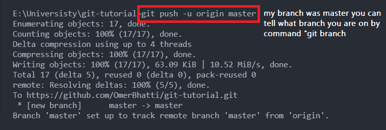

This article will get you familiarize with one of the most popular Version Control System (VCS) Git. Download
Following are the main steps that you have to always follow.
-
Open the directory in terminal and Initialize the empty git repository.
git init
It will create a .git directory in the current directory.
-
Now one of the useful command here is
git status
. It will tell you about what files are modified, added or deleted.
-
Now it is time to add the files to staging area (Tracking changes). for that we'll use the command :
git add (filename)
for specific file or
git add .
for adding all files
-
Once the files are in staging area you can save them to commit history via command
git commit -m "My First Commit"
and you can check all your commit from the command
git log
or
git log --oneline
-
Now our commit is saved we can add multiple commits in this repository.
-
Let's upload these changes to GitHub.
for that we have to link our local repository to github repository.
git remote add origin URL
in my case the URL is "https://github.com/OmerBhatti/git-tutorial.git"
-
To Push your code to linked repository you just have to type
git push -u origin master / branch-name

-
Now our local repository is synchronized with online repository what if we edit files on our online
repository
and want the changes in our local repository?
For that we'll use
git pull
command. if we try pushing somethiong without
git pull
it will raise a error like this
To resolve the issue you have to type
git pull
it will fetch all the changed files to your local repository and now your both repositories are synchronized.
If files have conflict on same line it may ask you what changes you want in your latest version.
Branching
-
One of the main use of git is for testing new features without Disrupting the stable version for that we create seperate branch
with the command
git checkout -b new-branch-name
this command will create new branch and move the HEAD to this branch.
Every branch created is the copy of the branch it was created from.
-
Now i can make any changes and commits in my new branch without disturbing code in master/main branch. When i am done with testing the features
i can merge the new-branch with the master/main branch.
to merge new branch in your main branch:
First switch to main branch by
git checkout main